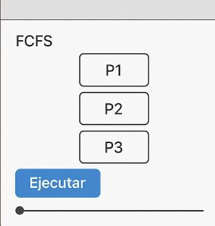

@ing_jairo · ahora

FCFS - First Come First Served
FCFS - First Come First Served
El algoritmo FCFS (First Come First Served) atiende los procesos en el orden en que llegan. Es el más simple, pero puede provocar largos tiempos de espera si un proceso largo llega primero.

#PlanificaciónDeProcesos #FCFS
Ventajas: Fácil de implementar.
Desventajas: Puede causar el problema de "convoy" (procesos cortos esperando a uno largo).
Desventajas: Puede causar el problema de "convoy" (procesos cortos esperando a uno largo).
💬 Comentarios
@ing_uberto:
¡FCFS es ideal para sistemas simples, pero no para multitarea!
@ing_david:
¿Qué pasa si un proceso tarda mucho? Los demás esperan 😅

@prof_ing_juan:
Dato: FCFS es equivalente a una cola FIFO (First In, First Out).
@ing_suleidy:
En sistemas interactivos, FCFS puede no ser la mejor opción.
 Google Chrome - Instagram
Google Chrome - Instagram


 PowerPoint - Interrupciones y Cambio de Contexto
PowerPoint - Interrupciones y Cambio de Contexto